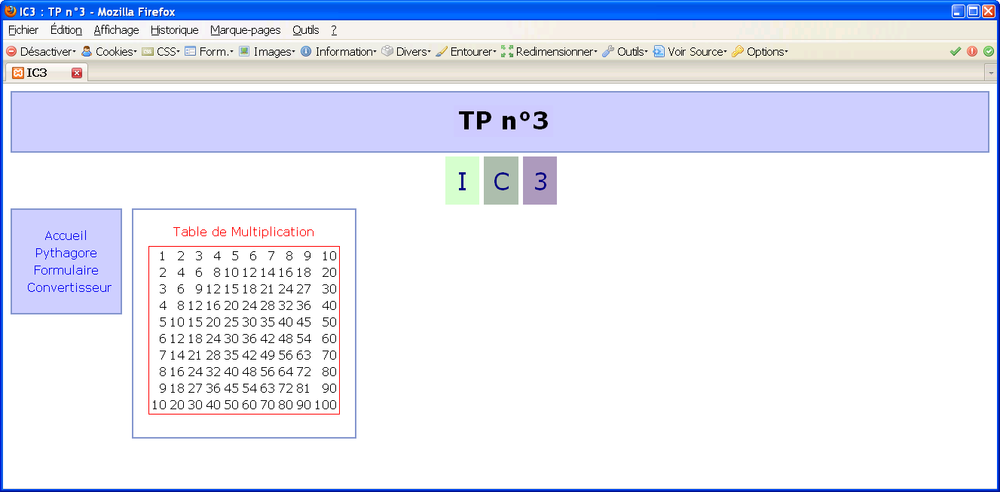

TP 3 : introduction au langage PHP
Durée : 4h
Objectif
- Savoir développer des pages web dynamiques simples avec le langage PHP.
- Savoir gérer les formulaires avec le langage PHP.
Environnement de travail
- Linux (Ubuntu) ou votre machine personnelle
- Plate-forme Netbeans (ou Eclipse).
- Vous pouvez travailler directement sur vos machines avec un Netbeans et un serveur web (par exemple BitNami, prendre celui avec PostgreSQL pour IC5 BitNami WAPP stack).
À la fin du TP, vous devez déposer une archive de vos travaux sur la plate-forme moodle.
Pour nommer votre archive, respecter le standard : Groupe_Nom_TP3_IC3.[zip|tar.gz]
Organisation
- Firefox étant équipé de l'add-on Web Developer, ouvrir Netbeans et créer un nouveau projet PHP nommé TP3 dans le répertoire /home/votre-login/public_html/TP3/.
N'oubliez pas toute l'aide que vous pouvez obtenir ici : http://www.php.net/
Une première page PHP
- Créer dans votre projet une nouvelle page web page1.php.
- Ajouter un script PHP à votre page permettant d'afficher par exemple ``Bonjour tout le monde !''.
- Lancer l'interprétation de ce code et expliquer précisément à l'enseignant vous encadrant ce qui se passe exactement.
Pour rappel, comme vous avez créé votre projet dans le répertoire /home/votre-login/public_html/TP3/, vos pages contenues dans le répertoire /home/votre-login/public_html/TP3/ seront visibles via l'url : http://iut-rt/~votre-login/TP3/.
Votre code PHP est interprété par le serveur iut-rt.
Sur vos machines persos prendre un serveur web WAPP ou LAPP Windows/Linux Apache PHP PostgreSQL (par exemple BitNami, prendre celui avec PostgreSQL pour IC5 BitNami WAPP stack).
On se propose maintenant d'interpréter ce code à la main en utilisant un interpréteur PHP en ligne commande.
- Ouvrez un termninal et placez vous dans le répertoire contenant votre page page1.php.
- Exécutez la commande php page1.php dans votre terminal. Qu'observez-vous ?
- Redirigez ce code dans une page page1_interpretee.html et visualisez sous firefox le résultat obtenu.
Nous allons maintenant tester l'ajout de la date et de l'heure dans un paragraphe en utilisant la fonction strftime() comme vu en cours.
- Modifier votre page en insérant le code suivant dans le corps de votre page.
<?php @setlocale('LC_TIME', 'fr_FR.utf8','fra'); echo "<p> Au moment de l'exécution de ce script PHP, nous sommes le ".strftime('%A %d %B %Y').".</p>"; ?>
- Tester votre page et vérifier l'affichage de la date en français (si ce n'est pas le cas corriger le code).
- Compléter ce code pour afficher également les heures, minutes et secondes.
- Ajouter dans votre code l'affichage d'un paragraphe affichant "Bonne journée !", "Bon après midi !", "Bonne soirée !", ou "Bonne nuit." en fonction de cette heure.
Un début d'aide (où la variable $h aura été correctement initialisée) :
if($h < 12){ echo "<p> Bonne journée !</p>"; }else if ...
- Afficher le contenu de la superglobale $_SERVER (tableau associatif). Commenter.
Rappel : vous pouvez afficher rapidement le contenu d'un tableau avec la fonction print_r.
Appeler l'enseignant pour valider cette étape.
Table de Pythagore
Dans cet exercice, vous aller créer une page mult.php affichant la table de multiplication des nombres de 1 à 10 (la table de Pythagore) comme illustré sur la figure ci-dessous.
Pour ce faire, compléter de manière adéquate le code suivant :
<!DOCTYPE html> <html lang="fr" > <head> <meta http-equiv="Content-Type" content="text/html; charset=utf-8"/> <title> Exercice 2 </title> </head> <body> <table style="border: 1px solid red; text-align: center; width: 40%; margin: 10px auto;"> <caption style="color:red; text-align:center">Table de Multiplication</caption> <?php for ( <à compléter> ) { ?> <tr style="text-align: right;"> <?php for ( <à compléter> ) { <à compléter> } ?> </tr> <?php } ?> </table> </body> </html>
Vous remarquerez des styles en-lignes dans le code ci-dessous, mais c'est juste car l'exercice porte sur le code PHP. Pour vos développements web, vous utiliserez bien sûr des feuilles de style externes.
Gestion d'un formulaire
- Créez une page form.html contenant dans son corps (body) le formulaire suivant.
<form method="post" action="form_action.php"> <fieldset> <legend>Informations sur vous</legend> <label for="nom">Nom</label> : <input type="text" name="nom" id="nom" /> <label for="prenom">Prénom</label> : <input type="text" name="prenom" id="prenom" value="Toto"/> <hr /> <label for="pseudo">Pseudo</label> : <input type="text" name="pseudo" id="pseudo" placeholder="Ex : progtr" size="10" maxlength="10"/> <label for="pass">Mot de passe</label> : <input type="password" name="pass" id="pass" /> <hr /> <input type="checkbox" name="newsletter" value="news"/> <label for="newsletter">Recevoir notre newsletter</label> <hr /> <input type="radio" name="sexe" id="homme" value="homme"/> <label for="homme">Homme</label> <input type="radio" name="sexe" id="femme" value="femme"/> <label for="femme">Femme</label> <hr /> <label for="photo">Photo</label> : <input type="file" name="photo" id="photo"/> <hr /> <label for="champCacher">Champ caché<label> : <input type="hidden" name="champCacher" id="champCacher" value="quelque chose de caché"/> <hr /> <label>Couleur préférée</label> : <select name="couleurs[]"> <option value="vert" selected="selected">Vert</option> <option value="bleu">Bleu</option> <option value="rouge">Rouge</option> <option value="jaune">Jaune</option> </select> <hr /> <label>Sports pratiqués</label> : <input type="checkbox" name="sports[]" value="football" />Football <input type="checkbox" name="sports[]" value="rugby" />Rugby <input type="checkbox" name="sports[]" value="golf" />Golf <input type="checkbox" name="sports[]" value="jogging" />Jogging <input type="checkbox" name="sports[]" value="autre" />Autre <hr /> <label for="bouton">Un bouton</label> : <input type="button" name="bouton" id="bouton" value="Cliquez ici" /> <hr /> <label for="init">Réinitialiser le formulaire</label> : <input type="reset" name="init" id="init" /> <hr /> <label for="description">Description</label> : <br /> <textarea rows="10" cols="50" name="description" id="description"></textarea> <hr /> <label for="image">Soumission avec une image</label> : <input type="image" name="image" id="image" src="image_soumission.jpg" /> <hr /> <label for="soumission">Soumission traditionnelle</label> : <input type="submit" name="soumission" id="soumission" /> </fieldset> </form>
- Réaliser l'action de ce formulaire permettant un affichage de toutes les données saisies en utilisant la fonction print_r.
- Réaliser cette même action à l'aide d'une boucle foreach.
- Faire attention à afficher même les éléments des tableaux.
- Pour tester si une variable est un tableau, utiliser la fonction is_array (php.net).
- Ajouter maintenant un message personnalisé reprenant les informations saisies. Exemples :
- Bonjour Monsieur Durant Roméo. Vous ne souhaitez pas recevoir notre newsletter. Vous pratiquez le football et le golf.
- Bonjour Madame André Irène. Vous avez accepté de recevoir notre newsletter. Vous ne pratiquez aucun sport.
Appeler l'enseignant pour valider cette étape.
Convertisseur Euros/Dollars
Créer une page convert.html contenant un formulaire composé de :
- une zone d'options permettant de choisir le sens de conversion que l'on désire, dollars vers euros ou l'inverse (boutons radios)
- un champ texte permettant de saisir la valeur que l'on souhaite convertir.

Réaliser la page convert_action.php, l'URL action de ce formulaire, contenant un script PHP qui va convertir la valeur saisie dans le sens précisé.
- Exemple : à la date du 6 février 2012, 1 euro vaut 1.31 dollar, et 1 dollar vaut 0.76 euro, donc si la valeur saisie est 100 et le sens de conversion demandé est "dollars vers euros", alors le résultat doit être un texte de la forme "100 dollars valent 76 euros à la date du 6 février 2012".
Appeler l'enseignant pour valider cette étape.
Habillage d'une page et incorporation de pages PHP
Créer une feuille de style tp3.css permettant d'habiller la page tp3.php, présente dans les données de ce TP, comme illustré sur la figure suivante.
Pour réaliser cet habillage, vous n'avez et ne devez pas modifier la page tp3.php
- La police d'écriture sur toute la page est verdana.
- Toutes les bordures des blocs sont de 2px.
- Les blocs contenant I, C, 3 sont séparés en haut et en bas de 5px, à droite de 1%.
- Penser aux réglages des marges internes (padding) et aux marges externes (margin).
- La largeur du bloc "navgauche" est de 8%, le bloc "navcorps" par une marge externe gauche de 1%.
- Pour centrer verticalement I, C, 3, penser à la propriété line-height.
- Pour le positionnement des blocs, penser aux propriétés float et clear
- Remarquer la format des liens.
- Ne pas régler les hauteurs des blocs : on n'utlisera pas la propriété height.
- Les codes des couleurs employées sont illustrés sur la figure ci-dessous.

On souhaite maintenant lier à chaque lien du bloc "navcorps" le contenu dans le bloc "navcorps" des pages précédemment réalisées. Par exemple en cliquant sur le lien associé à la table de Pythagore on aura le résultat illustré sur la figure suivante.

- Réaliser les changements nécessaires pour réaliser ce travail (le lien Accueil renverra à la page principale tp3.php où on affichera dans le bloc "navcorps" ce qui était affiché par la page page1.php).
Mettre dans une page titres.php tous les blocs communs aux différentes pages, et inclure cette page dans vos pages. Pour rappel : on utilise la fonction include.
Solution :
<?php include 'titres.php';?>
En gros votre nouvelle page tp3.php :
<!DOCTYPE html> <html lang="fr"> <head> <meta http-equiv="Content-Type" content="text/html; charset=utf8"/> <link rel="stylesheet" type="text/css" href ="tp3.css"/> <title> IC3 : TP n°3 </title> </head> <body> <?php include 'titres.php';?> <div id="navcorps"> <?php include 'affichedate.php';?> </div> </body> </html>
La page affichedate.php contient uniquement le code php permettant d'afficher Bonjour suivi de la date du jour.
La page titres.php contient uniquement le code suivant :
<div id="titre"> <p> TP n°3 </p> </div> <div id="soustitre"> <p class="couleur1">I</p> <p class="couleur2">C</p> <p class="couleur3">3</p> </div> <div id="navgauche"> <ul> <li><a href="tp3.php">Accueil</a></li> <li><a href="mult.php">Pythagore</a></li> <li><a href="form.php">Formulaire</a></li> <li><a href="convert.php">Convertisseur</a></li> </ul> </div>
Appeler l'enseignant pour valider cette étape.
N'oubliez pas : à la fin du TP, vous devez déposer une archive de vos travaux sur la plate-forme moodle. Pour nommer votre archive, respecter le standard : Groupe_Nom_TP3_IC3.[zip|tar.gz]